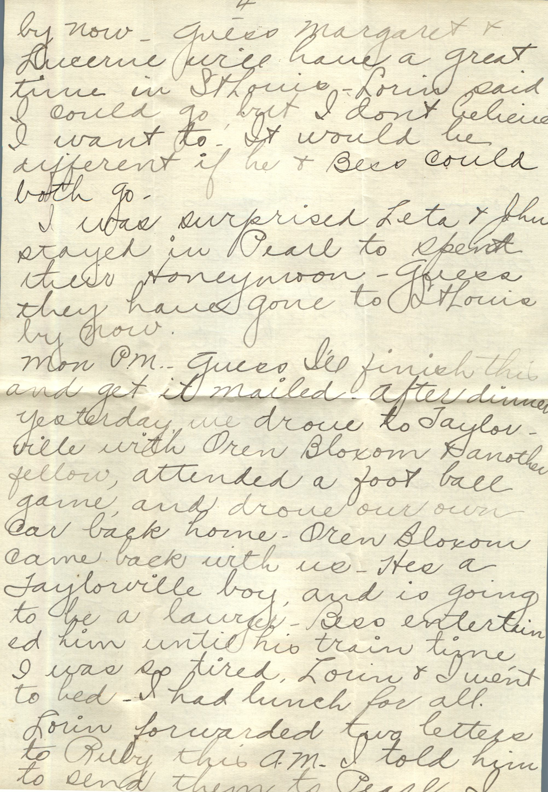
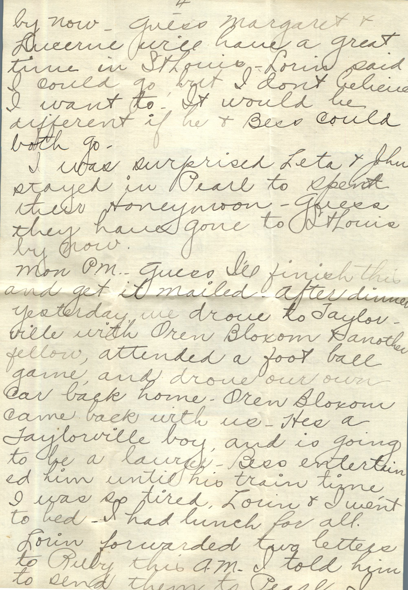
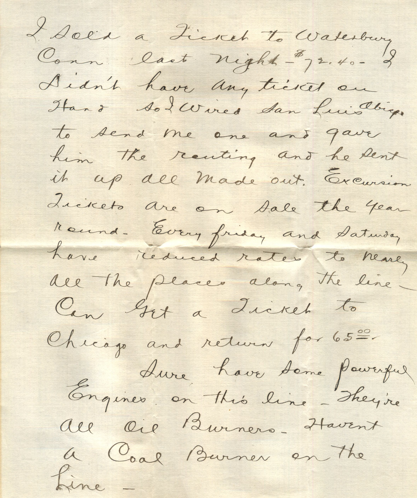
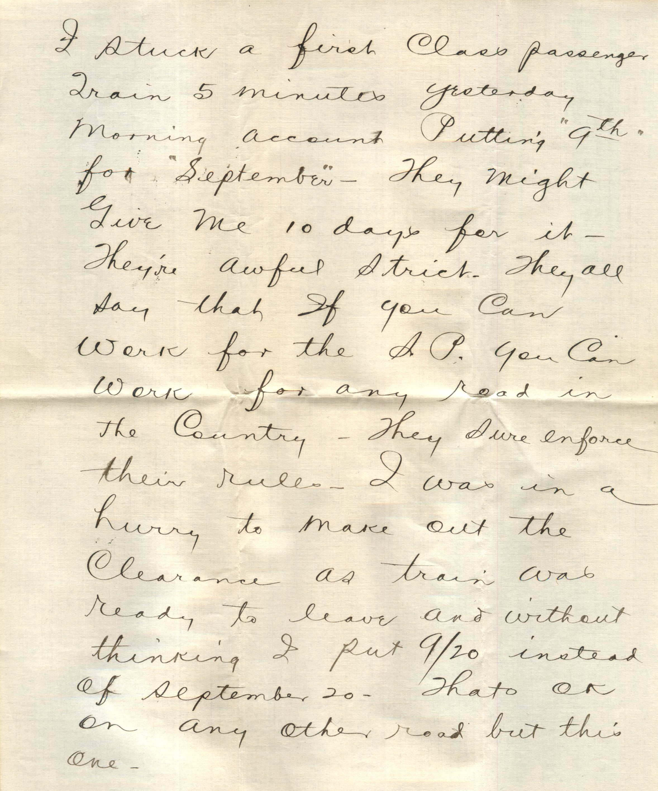
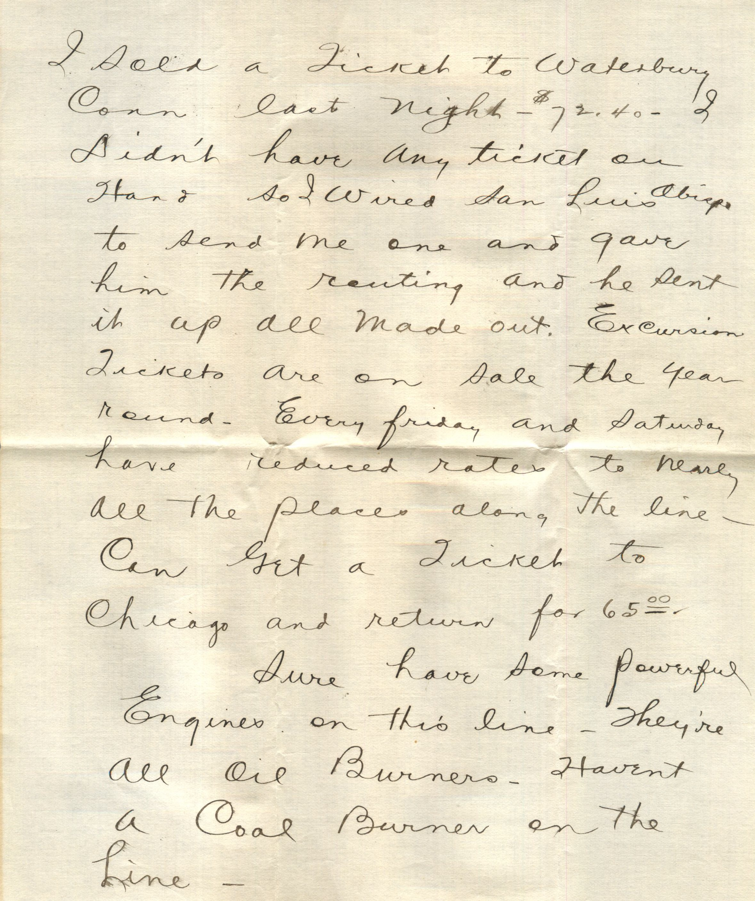
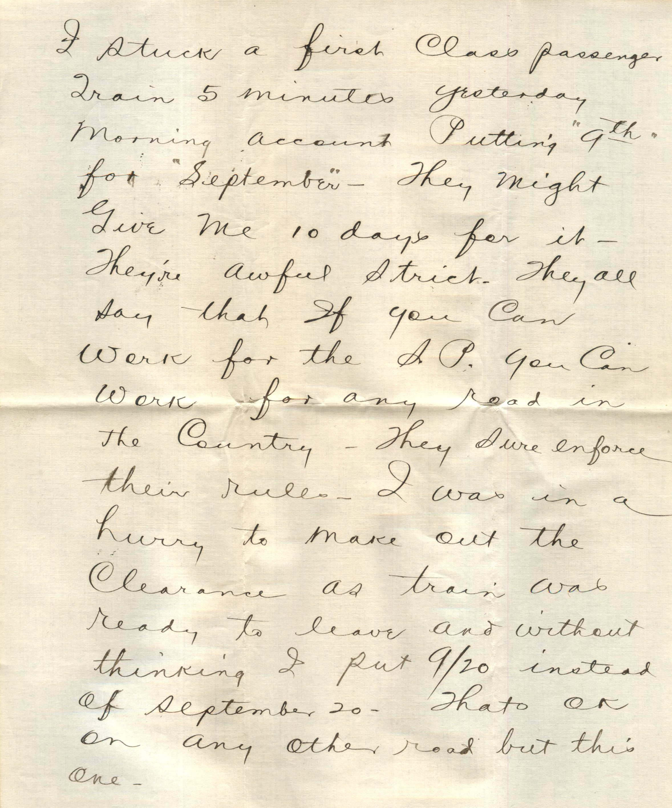
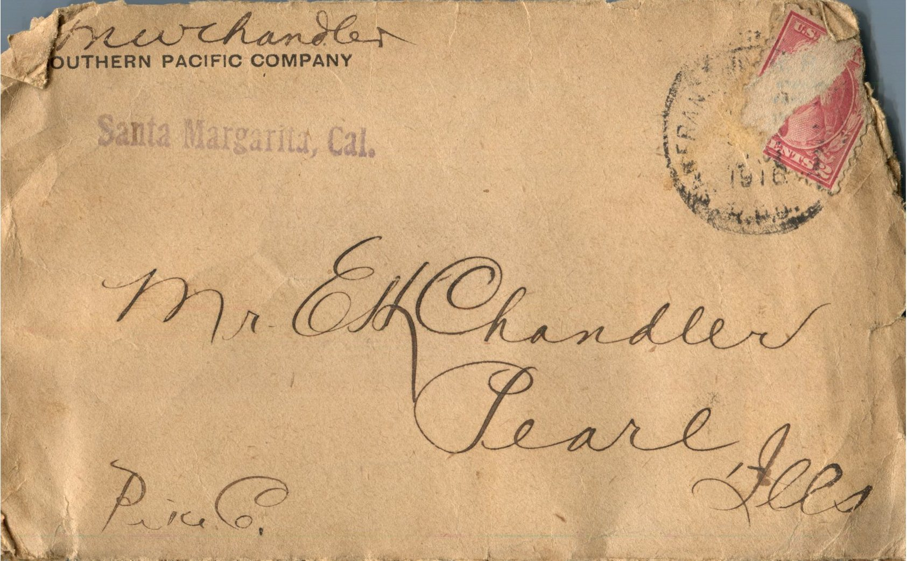
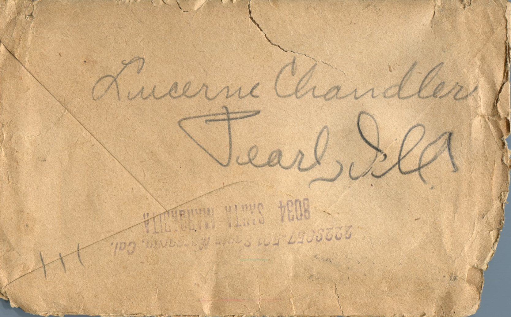
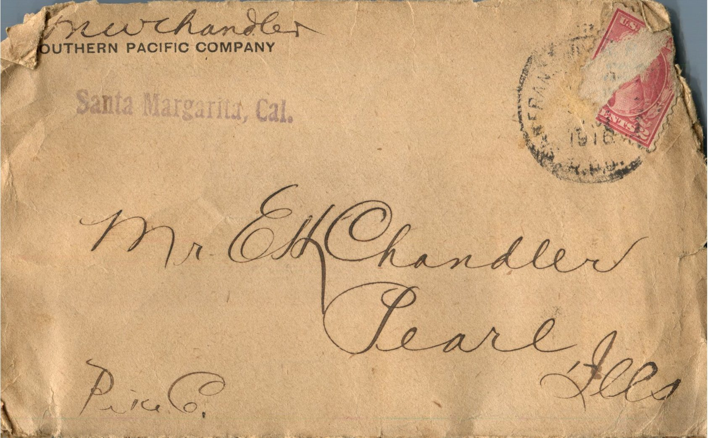
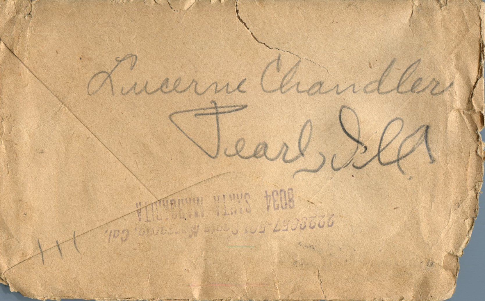

From: Grace Chandler, To: Jeanette Knox Chandler and Family


From: Grace Chandler Gourn, To: Jeanette Knox Chandler and Family Mailed From: Morrisonville, Illinois on October 27, 1916
Mrs. E.H. Chandler Pearl, Ill
Mrs. L.E. Gourn Morrisonville, Ill
Morrionville 10/27 Dearest Folks, Rec'd Mama's letter this am addressed to me and tho't I'd write this after noon while I am resting. Washes pretty good washing this am. It is a fine bright day to dry them. Didn't think when I got up I wanted to wash but everybody else around me was washing and just hated to see them get ahead. So Lorin stayed at home and helped me and with my electric washer and ringer was all thru by 10:30. Just got up at 7:30. Wasn't that going some? But after I get all the scrubbing done I am pretty tired. Lorin went in the car to Raymond this afternoon and to Nokomio if he can make it. He will be back tonight. Sat we cleaned the house all up and washed windows inside and out. I don't think I'll do any general house cleaning. Washed the wood work around the windows and am going to rent a vacuum sweeper (electric) to clean the rugs and mattresses. All of us, including Glenn, Thelma, bots, Callie, Allie and Chas were at Mother's for dinner and supper yesterday. Had dandy meals and a good time. Bess and I went uptown Sat pm to mail that mail you received and went on down to Callie's and she insisted on us staying for supper. Lori came home on the 6:30 train and came on down there. We stayed until 11:3. Mother send me a bunch of green tomatoes today so I'll have to work them into pickles this week. She made some dandy chow chow. Have brot my flower baskets inside. Think I'll take out some of the best plants and pot them. Haven't much room tho for flowers. That is, not a good sunny window to keep them in. Lorin got me a nice little trimmed oak sewing chair which is very comfortable. He bronzed my old gray shoes until now they look like new. What is the matter with Mr. Hanks that he has to be operated on? That's too bad, hope he gets better. Hope Martin gets to stay at the place where he is all winter. He seems to be doing pretty well. Wonder why Bill Watters sold out in the picture show biz? Thot it was such a paying proposition? Maybe Annie was jealous of he and Roy being in together. Ha. Glad Ruth adn Basil have gone back . The course of true love never did run smooth. Would like for her to come up and visit us. I know Bess would enjoy having her. Bess wore her new dress, hat, and shoes yesterday and looked so nice. She's so slender. Ha. I can't help but notice it. Lorin has a nice new brown overcoat. He may be over there soon. I know he is going to make the territory around there either this week or next. Wish we could come home Thanksgiving. I expect Bess will if she gets enough days off. I want her to so she can visit with you all and then tell me all about it. Well this is all I can think of for now. Was glad to get Mama's letter. Hope her cold is better. Would like to get weighed, believe I am getting heavier. Bess, Lorin, and I walked up town yesterday morning before going down to mothers. Much love to all. Write soon, Grace

 



 

 



{kind=link}
{kind=link}
{kind=link}
{kind=link}